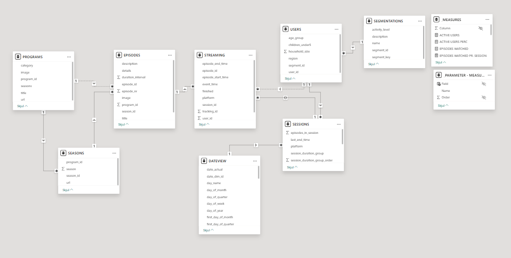

TVONE / GitHub Pages
TVONE CASE
En kompakt streaming-case med fokus på metadata, simulation, ETL og rapportering.
Sitet samler projektets vigtigste dele i samme struktur som de øvrige cases, så formål, pipeline, datamodel, rapport og repository kan læses hurtigt og uden at åbne hele repoet først.
Services
3
Rapportsider
1
Semantiske tabeller
8+
Datakilder
3
Data til rapport
E2E
Sider
Formål
Case, mål og læseretning.
Pipeline
JSON, simulationer, PostgreSQL og dbt.
Datamodel
Indhold, brugere, sessions og streaming.
Power BI
Overview-side og KPI-fokus.
Preview

ETL flow
Fra metadata og simulationer til model og rapport.

Semantisk model
Tabeller, relationer og measures til rapportering.

Overview
Streaming, platforme, programmer og tid.